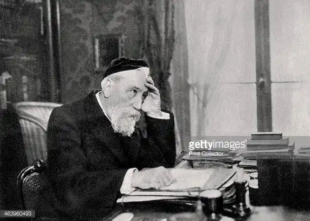

ФРАНС, Анатоль (France, Anatole; автонім: Тібо, Анатоль Франсуа — 16.04.1844, Париж — 12.10.1924, Сен-Сір-сюр-Луар) — французький письменник, лауреат Нобелівської премії 1921 р.
Художня творчість Франса вирізняється надзвичайною культурною насиченістю. Він — ерудит, який часто послуговується культурними алюзіями та ремінісценціями.Ж. Леметр писав про Франса: "Розум цього неймовірно освіченого літератора, вельми вправного і витонченого, ввібрав усі інтелектуальні надбання нашого століття; я не знаю іншого письменника, який би відображав реальність крізь такий багатющий пласт науки, літератури, попередніх вражень і роздумів". Франс поєднав у собі інтелектуала-ерудита і спостерігача-імпресіоніста. Потужна філософсько-моралістична і раціоналістична традиція у творчості Франса поєднується з культурою імпресіоністської візії та письма.
Видатний письменник-реаліст, він розглядає суспільні явища у їхній перспективі та діалектичному розвитку. Його художнє мислення вирізняється масштабністю і глибиною проникнення в сутність того, що відбувається. У 1921 р. Франс став лауреатом Нобелівської премії. У рішенні Нобелівського комітету підкреслювалося, що премія присуджується "за блискучі літературні досягнення, позначені шляхетністю і строгістю стилю, чутливістю людини з великою душею, зворушливою ясністю і достеменним французьким темпераментом". Франс народився у родині паризького книгаря. Дитинство майбутнього письменника минуло у батьковій книгарні, де панував культ друкованого слова. До книгарні, розташованої на набережній Малаке, частенько навідувалися відомі критики та письменники (у тому числі брати Ґонкури). Закінчивши коледж Св. Станіслава у 1862 р. і здобувши солідну гуманітарну освіту та звання бакалавра (1864), Франс розпочав літературну діяльність. Він співпрацював з різними виданнями, писав бібліографічні огляди, статті для довідників та енциклопедій, рецензії, передмови до книг. У 1867 р. побачили світ перші літературні твори Франса — кілька віршів, у яких поет освідчився у своїх республіканських симпатіях. У 1868 р. вийшов друком історико-літературний нарис Франса про А. де Віньї, де виразно помітний вплив концепції "трьох факторів" І. Тена. Творчість А. де Віньї дослідник розглядає як вияв конфлікту думки та дії у свідомості поета. Франс доволі прохолодно поставився до встановлення Паризької комуни: він залишив Париж і перечекав буремні дні у Версалі. У 1876 р. Франс обійняв посаду бібліотекаря у бібліотеці Сенату. Тоді ж він познайомився із Ш. Леконтом де Ліллем, налагодив дружні стосунки з "парнасцями", співпрацював з поетичним альманахом "Сучасний Парнас". Перша поетична збірка Франса "Золоті поеми" ("Poemes d'ores", 1873) стала свідченням того, що Франс успішно засвоїв канони парнаської естетики. Описовість, прагнення до об'єктивності, певна статичність образу в поєднанні з його колористичною і пластичною виразністю — ось головні особливості поезії Франса. Провідна думка збірки — у природі та в житті триває безупинна боротьба — до певної міри сформувалася під впливом доктрини Ч. Дарвіна, яким Франс замолоду захоплювався. У драматичній поемі "Корінфське весілля" ("Les Noces corinthiennes", 1876) розповідається про трагічне кохання молодого пастуха Гіппія до юної Дафни. Герої поеми стають жертвами християнського догматизму і релігійної нетерпимості. У поемі помітний вплив, який справили на Франса праці Е. Ренана. У повістях "Іокастa" ("Іocaste", 1879) і "Худющий кіт" ("Le Chat maigre", 1879) Франс вперше звернувся до сучасного матеріалу, змалював звичаї та характери сучасників. У квітні 1877 р. письменник одружився із Марі Валері де Совілл, дочкою значного чиновника міністерства фінансів, і подружжя замешкало в особняку на вулиці поблизу Булонського лісу. У 1881 р. Франс став батьком: у нього народилася дочка Сюзанна, яку він любив усе своє життя. Проте, як згодом виявиться, шлюб Франса не був довговічним. Для дружини було цілковито чужим як духовне життя письменника, так і його творчість, тому у 1892 р. Франс розлучився. Літературне визнання Франсу приніс роман "Злочин Сильвестра Боннара" ("Le Crime de Sylvestre Bonnard", 1881). Академік Сильвестр Боннар присвячує своє життя пошукові стародавніх рукописів, живе у звичному і затишному світі думки, своїх наукових досліджень та книг. Але у цьому штучному світі, обмеженому кабінетом і бібліотекою, час від часу повіває вітерець живого життя: чи то книгоноша п. Кокоз із його "історіями"; молода незнайомка з дитиною, яким Боннар на Різдво посилає поліно, щоб вони могли зустріти свято у теплій оселі, чи то онука жінки, яку Боннар колись кохав — Жанна-Александр, котра потрапила до рук пройдисвітів. Намагаючись вирвати сироту з принизливої ситуації, до якої вона потрапила, Боннар наважується на вчинок, який за тодішніми законами трактувався як злочин: він викрадає дівчину з пансіону пані Префер і видає її заміж за одного із своїх учнів. У "Злочині Сильвестра Боннара" Франс викшталтовує принципи нового типу роману. У центрі твору — герой-інтелектуал, "ідеолог", який чутливо реагує на все, що відбувається навколо, і робить важливі висновки із, на перший погляд, неістотних фактів, подій та спостережень. Сюжет роману розгортається як "експеримент" над ідеєю. Автор ніби перевіряє засадничу тезу свого героя: "...Марнувати свої дні на старі тексти — це ще не життя". Конфлікт роману набуває філософського характеру: в суперечку вступають не характери, а різні погляди на сенс життя та покликання людини. Підкреслюючи недостеменність, неповноцінність Боннарового життя, відірваного від світу дії і зосередженого на культурних надбаннях, Франс водночас показує і його антагоністів — діяльних, але бездуховних пані Префер і метра Муша. Перенесення акценту з інтриги на розвиток думки героя, його внутрішнього світу зумовило певну самостійність двох частин роману Франс: "Поліно" і "Жанна-Александр". Перші читачі та критики роману навіть звинувачували письменника в аморфності композиції. Проте обидві частини об'єднані образом головного героя і спільністю порушених у них проблем. Франс розглядає у романі питання про співвідношення мислення та дії, світу культури й об'єктивної реальності. У фіналі твору письменник схиляється до думки про необхідність синтезу цих двох сфер. Злочин Боннара, на думку автора, полягає не в тому, у чому його вбачають суспільство і закон. Сам Боннар називає себе злочинцем тоді, коли, віддавши Жанні-Александр у посаг свою бібліотеку, не може втриматися від того, щоби не забрати з неї кілька найдорожчих для нього книг. Боннар не здатний домогтися єдності думки та дії. Світ мислення і культури залишається для нього все-таки реальнішим від світу дії. Але, стаючи самодостатнім, цей світ може знищити живе життя — так само, як казки, які Боннар розповідає своєму хворобливому і вразливому внукові, остаточно калічать кволе єство хлопчика, прискорюючи його смерть. У "Злочині Сильвестра Боннара" виразно виявилася самобутність письменницької манери Франса: його іронія, гумор, скептицизм, майстерність ваговитої фрази і влучного слова. Роман було відзначено премією французької Академії. У 1883 р. Франс став постійним хронікером у журналі "Ілюстрований світ", у якому раз на два тижні почав з'являтися його огляд "Паризька хроніка", що охоплювала різні аспекти французького життя. З 1882 до 1896 р. він написав понад 350 статей і нарисів. Того самого року Франс познайомився із Леонтиною Арман де Кайяве, салон котрої був одним із найблискучіших у Парижі. Ровесниця письменника, розумна і владна аристократка, вона до самої смерті (1910) буде його вірною коханою та помічником, роблячи все для того, щоби Франс прославився. Наступним художнім здобутком письменника став роман "Таїс" ("Thai's", 1890), що розвиває надбання, які були зроблені у попередньому романі. Франс розмірковує над відносністю будь-якого знання і будь-якої духовної позиції. Беручи за основу традиційний агіографічний сюжет (перетворення грішника на праведника), Франс подає його дзеркальне відображення. Історію навернення у християнство куртизанки Таїс змінює розповідь про прозріння аскета і фанатика християнської віри Пафнутія після смерті Таїс, яку, як згодом виявилося, він пристрасно кохав. Таким чином, Пафнутій у своєму духовному розвитку долає шлях, протилежний до того, яким пройшла Таїс. З праведника він перетворюється на грішника, який заперечує християнську догму й утверджує цінність земного життя та його радощів. Поставивши поряд два світосприйняття (християнство і поганство), Франс жодному з них не віддає першості. Провідна думка роману — кожна істина є відносною, а будь-яка нетерпимість гідна осуду. "Я порадив сумніватися. Як на мене, нема нічого кращого за філософський сумнів", — писав Франс про свій роман. У "Таїс" традиції філософської прози XVIII ст. поєднуються із надзвичайною пластичністю і мальовничістю парнаського образу, з імпресіоністичністю описань, з використанням символу. Значну частину творчої спадщини Франса складають його літературно-критичні статті, есе, літературні портрети. Статті, опубліковані Франсом у газеті "Час" ("Le Temps") упродовж 1886—1893 pp., згодом увійшли у його чотиритомник "Літературне життя" ("La vie litteraire", I т. — 1888, II т. — 1890, III т. — 1891, IV т. — 1892). Літературна критика Франса є імпресіоністичною за стилістикою. Письменник у своїх статтях та етюдах не намагається подати об'єктивний аналіз творів, а передусім описує своє суб'єктивне враження про них. Вочевидь, саме цим пояснюється потяг Франса до жанру есе, літературно-критичного фрагменту, невеликої статті. "Щиро зізнаюся, я безмежно люблю все незавершене, і гадаю, що лише фрагменти, уламки можуть викликати у людей з витонченим смаком уявлення про досконалість", — писав Франс. Романи "Шинок королеви Гусячі лапки" ("La rotisserie de la reine Pedauque", 1892) й "Опінії пана Жерома Куаньяра" ("Les opinions de Jerome Coignard", 1893) об'єднані образом Жерома Куаньяра, бібліотекаря та вченого, котрий понад усе цінує свободу мислення. У другому романі герой викладає свої погляди, виступає з критикою навколишньої дійсності, ведучи жваву розмову зі своїм учнем Жаком Турнеброшем.